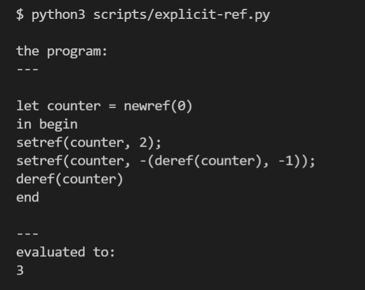
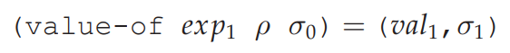

EXPLICIT-REFS: A Language with Explicit References¶
EXPLICIT-REFS 语言增加了引用类型，并提供了操作引用的几个原语
syntax:
Program ::= Expression
a-program(exp1)
Expression ::= Number
const-exp(num)
Expression ::= - (Expression, Expression)
diff-exp(exp1, exp2)
Expression ::= zero? (Expression)
zero?-exp(exp1)
Expression ::= if Expression then Expression else Expression
if-exp(exp1, exp2, exp3)
Expression ::= Identifier
var-exp(var)
Expression ::= let Identifier = Expression in Expression
let-exp (var, exp1, body)
Expression ::= proc (Identifier) Expression
proc-exp (var, body)
Expression ::= (rator, rand)
call-exp(rator, rand)
Expression ::= letrec Identifier (Identifier) = Expression in Expression
letrec-exp (p-name b-var p-body letrec-body)
Expression ::= newref (Expression)
newref-exp (exp1)
Expression ::= deref (Expression)
deref-exp (exp1)
Expression ::= setref (Expression , Expression)
setref-exp (exp1 exp2)
语言运行效果如下：
按照EOPL的说法，这种带有reference的语言是有effect的，这种语言的解释模式是store-passing style。
可以看到，在给表达式求值需要传入一个store对象，执行完会返回一个新的store对象。 这两个store对象表示的store的不同状态。
问题：用什么表示store？
答：直接用一个全局的python数组表示，数组的index就是reference。运行期间对store的修改直接映射到 这个数组上即可。
store的表示
g_store = []
def get_store():
global g_store
return g_store
def new_ref(value) -> int:
the_store = get_store()
next_ref = len(the_store)
the_store.append(value)
return next_ref
def de_ref(ref):
the_store = get_store()
return the_store[ref]
def set_ref(ref, value):
the_store = get_store()
if ref + 1 > len(the_store):
raise Exception("invalid reference")
else:
the_store[ref] = value
求值规则
if isinstance(exp, NewRefExp):
v1 = evaluate(exp.exp, env)
return RefVal(new_ref(v1))
if isinstance(exp, DeRefExp):
v1 = evaluate(exp.exp, env)
ref = v1.to_ref()
return de_ref(ref)
if isinstance(exp, SetRefExp):
ref_val = evaluate(exp.ref_exp, env)
val = evaluate(exp.val_exp, env)
set_ref(ref_val.to_ref(), val)
return NumVal(23)